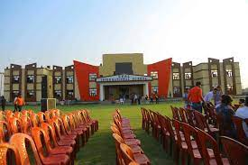
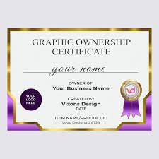

I'm Harsha
I'm a student who is trying to make her mind to make new things or fuvk the things which I already know click on the photo to know more about meEDUCATION
I've done my schooling in timpany, which was the best school around.and I've done my junior college in ascent junior college ,
and now I'm pursuing my engineering at the local uni. 
WORK EXPERIENCE
still unemployed ,and learning things from online and apps as school does'nt teach much.unemployed meme ;)
SKILLS
-
languagues I've learnt till date are:
- HTML
- C (Basics)
- Python (ongoing)
- PS
- Illustrator
- InDesign
AWARDS AND CERTIFICATIONS
recived awards ar nearly negligable.certification in graphic design and html course in the near future. 